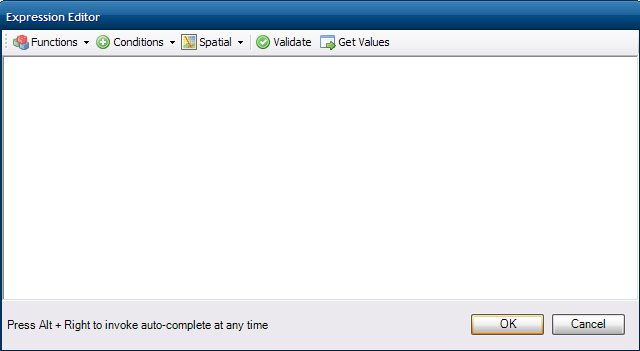

The Expression Editor¶
FDO has a built-in expression engine, which support for a whole lot of various functions. These expression can be used for:
- Query filters
- Computed Properties
- Aggregate Properties
FDO Toolbox provides an Expression Editor that can assist in writing these FDO expressions.
The user interface elements of the Expression Editor are described below:
Function
This lists all the expression functions supported by the current provider listed and sorted by category. Clicking any function will insert that function at the editor’s current text cursor position.
Conditions
This lists all the possible binary condition operators. Clicking any condition will insert that operator at the editor’s current text cursor position.
Spatial
This lists all the possible spatial binary condition operators. Clicking any condition will insert that operator at the editor’s current text cursor position.
Validate
This performs validation on the current expression text
Get Values
This allows you to fetch all distinct values for a given property. It will use the following methods (in order of support):
- ISelectAggregate with Distinct = true
- raw SQL
- brute force. User will be prompted to continue if this option is taken.
Once the list of distinct values are retrived, clicking on any value will insert that value at the editor’s current text position.
Auto-complete (aka. Intellisense)¶
The Expression Editor also has built-in auto-complete that brings up possible property/function suggestions as you type. You can invoke auto-complete at any time by pressing Alt + Right key